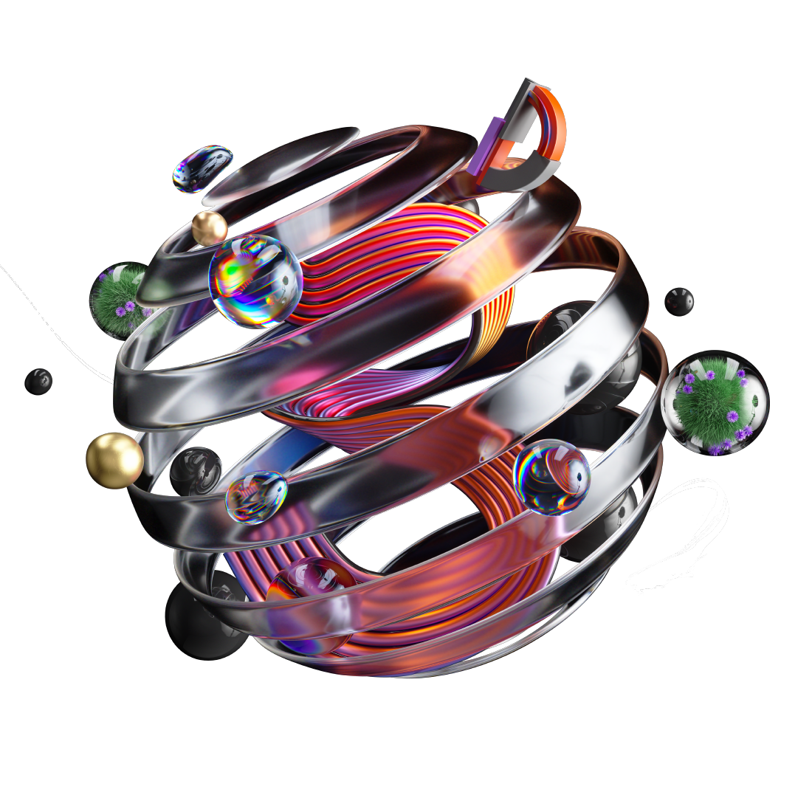

Diagnóstico Estratégico
¿Qué arquetipo de
innovación
es tu hospital?
8 preguntas · 4 minutos · Resultado inmediato
Identificación
0%
Antes de comenzar
Hospital / Centro
Selecciona tu hospital...
Hospital Univ. Virgen Macarena
Hospital Univ. Vall d'Hebron
Hospital Univ. Virgen del Rocío
Hospital Univ. y Politécnico La Fe
Hospital Univ. La Paz
Hospital Univ. De Santiago de Compostela
Hospital Sant Joan de Deu
Hospital Clínic de Barcelona
Hospital General Univ. Dr. Balmis
Hospital Clínico San Carlos
Hospital Son Espases
Clínica Univ. de Navarra
Hospital de la Santa Creu i Sant Pau
Hospital Univ. La Princesa
Hospital Univ. 12 de Octubre
Hospital Virgen del Rocío
Comenzar →
Tu arquetipo de innovación
Tus temáticas prioritarias para grupos de trabajo
← Volver a empezar